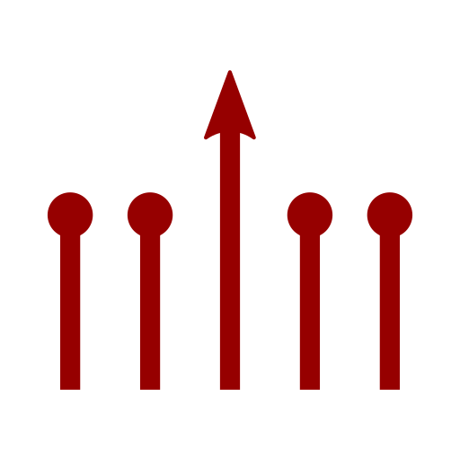

<section id="any_user">
    <div class="container">
        <div class="row">
            <div class="col-xs-10 col-xs-offset-1
                        col-sm-8 col-sm-offset-2
                        col-md-6 col-md-offset-3
                        col-lg-4 col-lg-offset-4 text-center">
                <h2 class="section-heading">One Library</h2>
                <hr class="primary">
            </div>
        </div>
        <div class="row">
            <div class="col-xs-10 col-xs-offset-1
                        col-sm-8 col-sm-offset-2
                        col-md-6 col-md-offset-3
                        col-lg-6 col-lg-offset-3 text-center">
                
                <div class="service-box">
                    <i class="overlay fa fa-4x wow fadeIn text-primary" data-wow-delay="3.6s">
                        
                    </i>
                    <i class="overlay fa fa-4x wow fadeIn text-primary" data-wow-delay="3.4s">
                        
                    </i>
                    <i class="overlay fa fa-4x wow fadeIn text-primary" data-wow-delay="3.2s">
                        
                    </i>
                    <i class="overlay fa fa-4x wow fadeIn text-primary" data-wow-delay="3.0s">
                        
                    </i>
                    <i class="overlay fa fa-4x wow fadeIn text-primary" data-wow-delay="2.8s">
                        
                    </i>
                    <i class="overlay fa fa-4x wow fadeIn text-primary" data-wow-delay="2.6s">
                        
                    </i>
                    <i class="overlay fa fa-4x wow fadeIn text-primary" data-wow-delay="2.4s">
                        
                    </i>
                    <i class="overlay fa fa-4x wow fadeIn text-primary" data-wow-delay="2.2s">
                        
                    </i>
                    <i class="overlay fa fa-4x wow fadeIn text-primary" data-wow-delay="2.0s">
                        
                    </i>
                    <i class="overlay fa fa-4x wow fadeIn text-primary" data-wow-delay="1.8s">
                        
                    </i>
                    <i class="overlay fa fa-4x wow fadeIn text-primary" data-wow-delay="1.6s">
                        
                    </i>
                    <i class="overlay fa fa-4x wow fadeIn text-primary" data-wow-delay="1.4s">
                        
                    </i>
                    <i class="overlay fa fa-4x wow fadeIn text-primary" data-wow-delay="1.2s">
                        
                    </i>
                    <i class="overlay fa fa-4x wow fadeIn text-primary" data-wow-delay="1.0s">
                        
                    </i>
                    <i class="overlay fa fa-4x wow fadeIn text-primary" data-wow-delay=".8s">
                        
                    </i>
                    <i class="overlay fa fa-4x wow fadeIn text-primary" data-wow-delay=".6s">
                        
                    </i>
                    <i class="overlay fa fa-4x wow fadeIn text-primary" data-wow-delay=".4s">
                        
                    </i>
                    <i class="overlay fa fa-4x wow fadeIn text-primary" data-wow-delay=".2s">
                        
                    </i>
                    <i class="overlay fa fa-4x wow fadeIn text-primary">
                        
                    </i>
                </div>
            </div>
        </div>
        <div class="row">
            <div class="col-xs-10 col-xs-offset-1
                        col-sm-4 col-sm-offset-0
                        col-md-4 col-md-offset-0
                        col-lg-4 col-lg-offset-0
                        text-center">
                
                <h3>Example</h3>
                <p class="text-muted">You want to create a new suite of ML tools, and open-source these for the community</p>
                <p class="text-muted">You could write these tools in one framework, but this would limit your users, preventing many in the ML community from using it</p>
            </div>
            <div class="col-xs-10 col-xs-offset-1
                        col-sm-4 col-sm-offset-0
                        col-md-4 col-md-offset-0
                        col-lg-4 col-lg-offset-0
                        text-center">
                
                <h3>Current Solution</h3>
                <p class="text-muted">Duplicate all of the work, re-implementing the entire library or creating similar variants in multiple frameworks independently</p>
                <p class="text-muted">For example,
                    <a href="https://github.com/tensorflow/lucid">Lucid</a>&rarr;<a href="https://github.com/greentfrapp/lucent">Lucent</a>,
                    <a href="https://github.com/tensorflow/tensorflow/tree/master/tensorflow/examples/speech_commands">Speech Commands</a>&rarr;<a href="https://github.com/castorini/honk">Honk</a>,
                    <a href="https://github.com/pytorch/vision">torchvision</a>&rarr;<a href="https://github.com/rolandgvc/flaxvision">flaxvision</a>,
                    <a href="https://github.com/deepmind/graph_nets">Graph Nets</a>&rarr;<a href="https://github.com/deepmind/jraph">Jraph</a>,
                    <a href="https://github.com/tensorflow/probability">TensorFlow Probability</a>&rarr;<a href="https://github.com/deepmind/distrax">Distrax</a>
                    and <a href="https://github.com/deepmind/sonnet">Sonnet</a>&rarr;<a href="https://github.com/deepmind/dm-haiku">Haiku</a></p>
            </div>
            <div class="col-xs-10 col-xs-offset-1
                        col-sm-4 col-sm-offset-0
                        col-md-4 col-md-offset-0
                        col-lg-4 col-lg-offset-0
                        text-center">
                
                <h3>Ivy Solution</h3>
                <p class="text-muted">Write your library in Ivy</p>
                <p class="text-muted">Users will be able to use your library with any framework, including ones not yet invented</p>
                <p class="text-muted">All code can be stepped through line-by-line,
                    which is not the case when transpiling individual functions from pre-existing non-Ivy libraries</p>
            </div>
        </div>
    </div>
</section>
